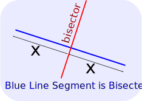
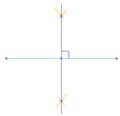
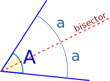
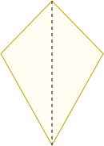

Bisect
"Bisect" means to divide into two equal parts.
You can bisect lines, angles, and more.
The dividing line is called the "bisector"
Bisecting a Line Segment
Here the blue line segment is bisected by the red line:

You can try it yourself (try moving the points):
When the bisector is perpendicular (at right angles) to the line being bisected it is called a "perpendicular bisector".
|  | See How To Bisect A Line Segment |
Bisecting an Angle
Here the blue angle is bisected by the red line:

You can try it yourself (try moving the points):
images/geom-angle-bisect.js
 |
See How To Bisect An Angle |
Bisect a Shape
We can also bisect some shapes. Here a kite is bisected by a dashed line:
